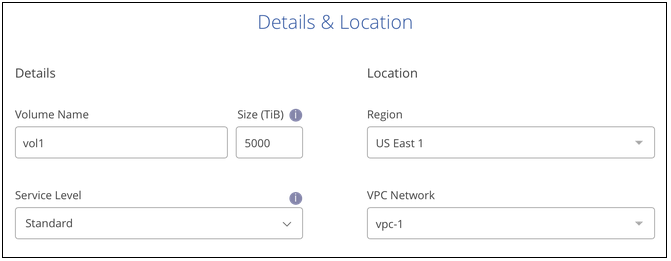
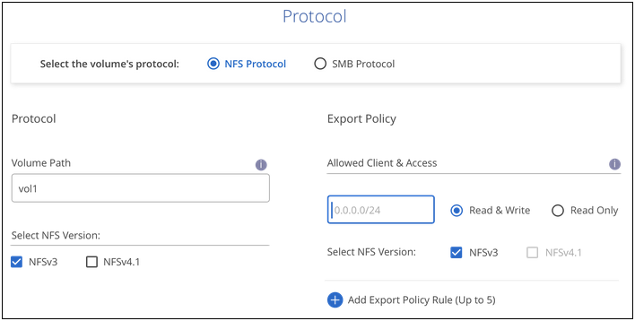

Solicitar cambios en el documento
Solicitar cambios en el documento Editar en GitHub
Editar en GitHub Guía del colaborador
Guía del colaboradorCree y monte volúmenes
Colaboradores
BlueXP le permite crear volúmenes de cloud basados en su suscripción a Cloud Volumes Service para Google Cloud. Después de crear un volumen, obtenga los comandos de montaje pertinentes para poder montar el volumen en un cliente.
Cree volúmenes
Puede crear NFS o volúmenes SMB en una cuenta nueva o existente de Cloud Volumes Service para Google Cloud. Cloud Volumes admite actualmente NFSv3 y NFSv4.1 para clientes de Linux y UNIX y SMB 3.x para clientes de Windows.
-
Si desea utilizar SMB en GCP, debe haber configurado DNS y Active Directory.
-
Cuando planee crear un volumen SMB, debe tener un servidor de Windows Active Directory disponible para el que se pueda conectar. Deberá introducir esta información al crear el volumen. Además, asegúrese de que el usuario Admin puede crear una cuenta de equipo en la ruta de la unidad organizativa (OU) especificada.
-
Seleccione el entorno de trabajo y haga clic en Añadir nuevo volumen.
-
En la página Details & Location, introduzca detalles sobre el volumen:
-
Escriba un nombre para el volumen.
-
Especifique un tamaño dentro del intervalo de 1 TIB (1024 GIB) a 100 TIB.
-
Especifique un nivel de servicio: Standard, Premium o Extreme.
-
Seleccione la región de Google Cloud.
-
Seleccione la red VPC a partir de la que se podrá acceder el volumen. Tenga en cuenta que el VPC no se puede cambiar ni editar después de que se cree el volumen.
-
Haga clic en continuar.

-
-
En la página Protocol, seleccione NFS o SMB y, a continuación, defina los detalles. Las entradas necesarias para NFS y SMB se muestran en secciones independientes a continuación.
-
Para NFS:
-
En el campo Volume Path, especifique el nombre de la exportación de volumen que se verá cuando monte el volumen.
-
Seleccione NFSv3, NFSv4.1 o ambos en función de sus requisitos.
-
De manera opcional, puede crear una política de exportación para identificar los clientes que pueden acceder al volumen. Especifique:
-
Clientes permitidos mediante una dirección IP o enrutamiento entre dominios sin clase (CIDR).
-
Derechos de acceso como sólo lectura y escritura o lectura.
-
Protocolo de acceso (o protocolos si el volumen permite el acceso NFSv3 y NFSv4.1) utilizado para los usuarios.
-
Haga clic en + Agregar regla de directiva de exportación si desea definir reglas de política de exportación adicionales.
En la siguiente imagen, se muestra la página Volume rellenada para el protocolo NFS:
-

-
-
Para SMB:
-
En el campo Volume Path (Ruta de volumen), especifique el nombre de la exportación de volumen que verá cuando monte el volumen y haga clic en Continue (continuar).
-
Si se ha configurado Active Directory, verá la configuración. Si es el primer volumen que se está configurar y no se ha configurado ningún Active Directory, puede habilitar el cifrado de sesión SMB en la página SMB Connectivity Setup:
Campo Descripción Dirección IP primaria DNS
Las direcciones IP de los servidores DNS que proporcionan resolución de nombres para el servidor SMB. Utilice una coma para separar las direcciones IP cuando haga referencia a varios servidores, por ejemplo, 172.31.25.223, 172.31.2.74.
Dominio de Active Directory al que unirse
El FQDN del dominio de Active Directory (AD) al que desea que se una el servidor SMB.
Nombre NetBIOS del servidor SMB
Nombre NetBIOS para el servidor SMB que se va a crear.
Credenciales autorizadas para unirse al dominio
Nombre y contraseña de una cuenta de Windows con privilegios suficientes para agregar equipos a la unidad organizativa (OU) especificada dentro del dominio AD.
Unidad organizacional
La unidad organizativa del dominio AD para asociarla con el servidor SMB. El valor predeterminado es CN=equipos para las conexiones con su propio servidor de Windows Active Directory.
En la siguiente imagen, se muestra la página volumen llena para el protocolo SMB:

-
-
Haga clic en continuar.
-
Si desea crear el volumen según una copia de Snapshot de un volumen existente, seleccione la copia de Snapshot en la lista desplegable Snapshot Name. De lo contrario, haga clic en continuar.
-
En la página Snapshot Policy, puede habilitar Cloud Volumes Service para crear copias Snapshot de los volúmenes según una programación. Puede hacerlo ahora moviendo el selector a la derecha o bien se puede editar el volumen más tarde para definir la política de snapshots.
Aprenda cómo "crear una política de snapshot".
-
Haga clic en Añadir volumen.
El nuevo volumen se agrega al entorno de trabajo.
Continúe con el montaje del volumen de cloud.
Monte Cloud Volumes
Acceda a las instrucciones de montaje desde BlueXP para que pueda montar el volumen en un host.

|
Utilice el protocolo/dialecto resaltado que admite su cliente. |
-
Abra el entorno de trabajo.
-
Pase el ratón sobre el volumen y haga clic en montar el volumen.
Los volúmenes NFS y SMB muestran instrucciones de montaje para ese protocolo.
-
Pase el ratón sobre los comandos y cópielos en el portapapeles para simplificar este proceso. Solo tiene que agregar el directorio de destino/punto de montaje al final del comando.
ejemplo de NFS:

El tamaño máximo de I/o definido por la
rsizey..wsizeoptions es 1048576, sin embargo 65536 es el valor predeterminado recomendado para la mayoría de los casos de uso.Tenga en cuenta que los clientes de Linux tendrán NFSv4.1 de manera predeterminada a menos que se especifique la versión con
vers=<nfs_version>opción.ejemplo SMB:

-
Asigne la unidad de red siguiendo las instrucciones de montaje de su instancia.
Después de completar los pasos de las instrucciones de montaje, ha montado correctamente el volumen de cloud en su instancia de GCP.